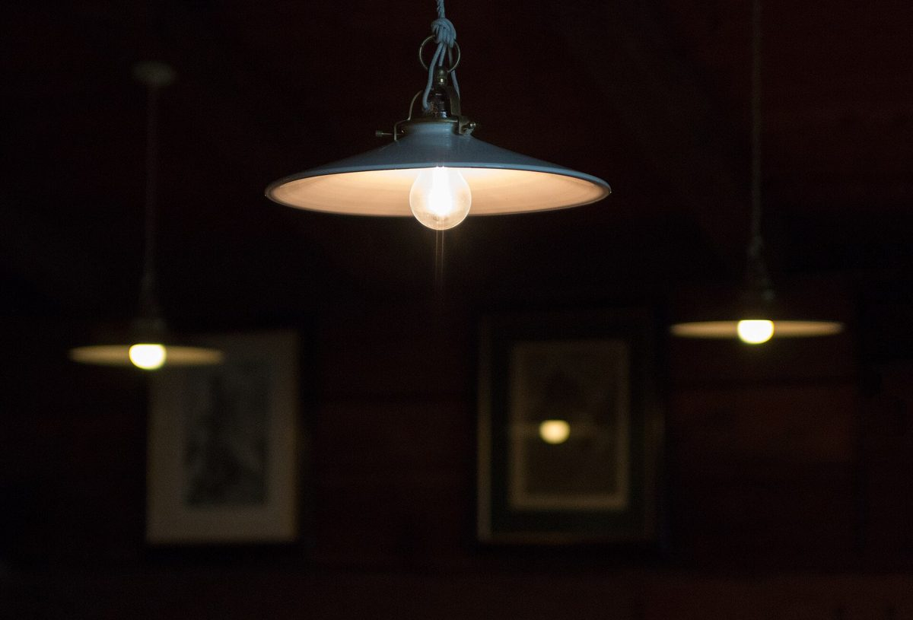

四本目の格子
こんなお店かもしれない
カフェという業種から自然に想像できる声を、制作側が創作したものです。
以下は制作側の創作によるイメージ例で、実在のお客様の投稿ではありません。実際の口コミ・評価とは関係ありません。
窓の近くの席で、温かいコーヒーをゆっくり飲む。そんな静かなひとときを過ごせそうなお店です。
友人と近況を話しながら、気負わずのんびり過ごせそうな場所だと思います。明るい雰囲気が似合いそうです。
ちょっと疲れた日に立ち寄って、気持ちを切り替えられそう。店名のとおり、軽やかな気分になれる気がします。
